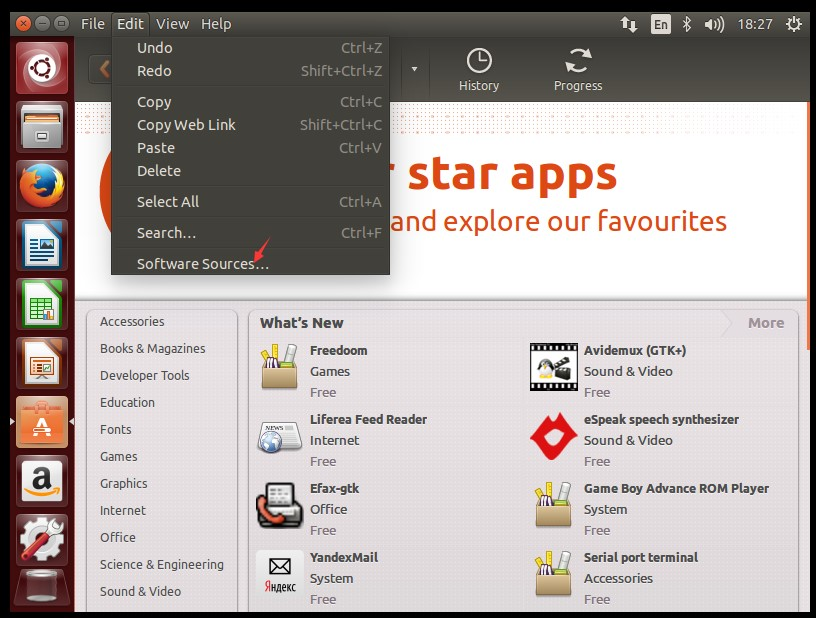

- 安装界面,如果无法看到按钮,可以用tab解决.

- 安装过程提示重启,不要傻等,赶紧按回车
- 设置软件源 软件中心->软件源->other->选择最佳 一般选阿里云
 设置根用户密码:
1
2
3
4$ sudo passwd root
Enter new UNIX password:
Retype new UNIX password:
passwd: password updated successfully安装vmware-tool
安装软件:
- 右键打开终端
1
2sudo apt-get install nautilus-open-terminal //安装
nautilus -q //重新加载文件管理器
- 右键打开终端
下载工具列表:
- vscode
- vim
- git
安装java环境